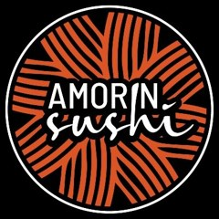

Início · Pra dividir
Pra dividir: 1 kg de temaki ou de yakisoba
Os tamanhos grandes do cardápio, para a mesa toda: temaki hot de 1 kg, yakisoba de 1 kg e o combo misterioso.

Temaki hot 1 kg
Cinco sabores, com 3 molhos
Yakisoba 1 kg
Do vegetariano ao Yaki da casa
Combo misterioso
A casa escolhe as peças
Os sabores não podem ser escolhidos. Em caso de alergia, a casa não recomenda o combo misterioso.
Quanto pedir
Uma conta simples
O yakisoba também sai em 500 g, a partir de R$ 15,00, e o temaki hot individual tem 250 g. Na dúvida, diga quantas pessoas são na mensagem do WhatsApp.
Itens e preços do CardápioWeb da casa (app.cardapioweb.com/amor_in_sushi), lido em 04/10/2026.
Dúvidas frequentes
Perguntas comuns
O temaki de 1 kg leva arroz?
Sim; sem arroz custa + R$ 35,00.
Posso pôr mais proteína no yakisoba?
Sim: frango + R$ 10,00, carne + R$ 14,00, camarão, salmão grelhado ou lula + R$ 17,00 (100 g).
Peça agora
Escolha as peças, a gente cuida do resto.
Delivery para mais de 150 bairros de Salvador ou retirada no balcão da Rua da União, na Mata Escura. O pedido chega pronto no WhatsApp da casa.